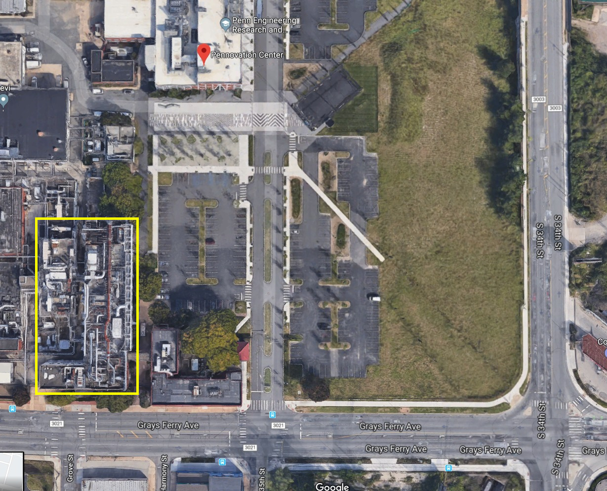
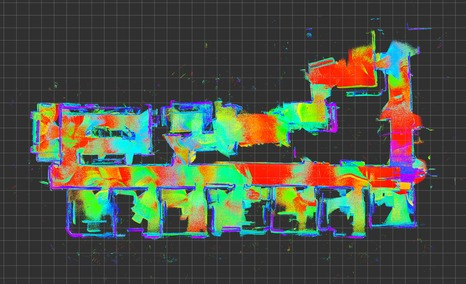
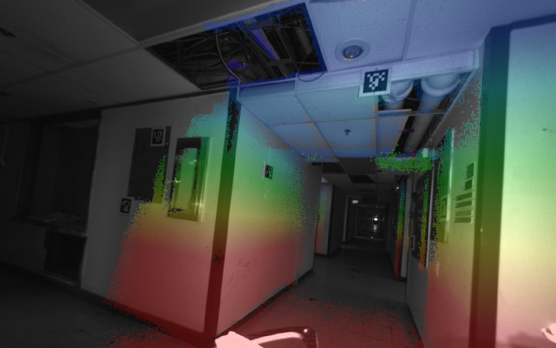

Building 227
Overview
The Building 227 (marked with yellow rectangle) sequences were collected in a vacant building next to the Pennovation Center at UPenn. 
Sequences
| 2018-11-09-08-37-41 | |
| Duration: 3min:42s (222s) | approx path length: unknown |
| Short loop on the 4th floor. Modest VIO drift, with some fortuitous error cancellation. | |
|  |  |
| rosbag with raw data (15Gb) | calibration yaml file |
| rosbag with odometry (40Mb) | video |